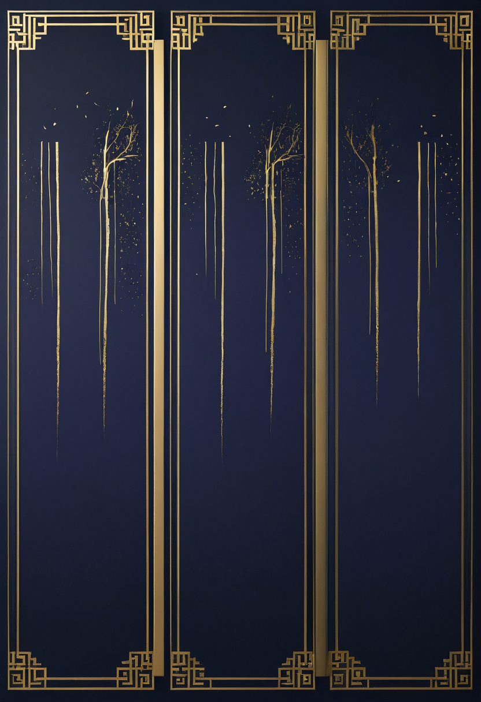
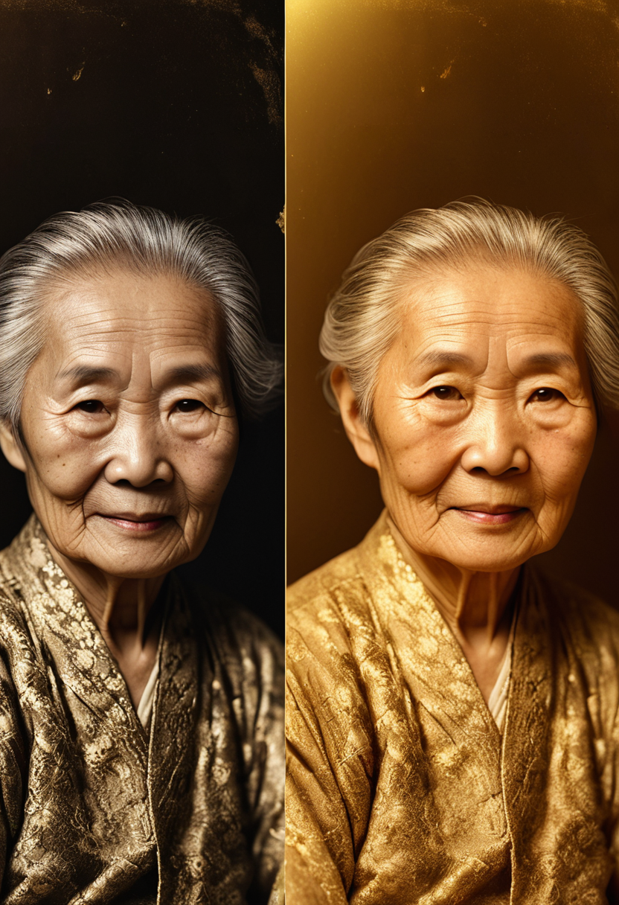

📝 内容库（图文+文案+算法说明）
每条内容包含：图片 · 小红书封面文字 · 正文 · 平台差异化版本 · 为什么能推流

⚠️ CapCut加文字🖼️ 小红书封面文字（最重要！大字覆盖图片）
字体：粗黑体 / 颜色：金色或白色 / 大字占封面2/3
你最爱说的一句口头禅
暴露了你缺什么五行
为什么：小红书用户先看封面图，封面有问题句会停下来，这比正文标题更早触达用户
📕 小红书正文（素人号版·更真实）
标题（用于搜索SEO）：
你最爱说的一句话，暴露了你缺什么五行
正文：
今天用善缘测了下我的八字，发现一件很准的事——
我超爱说"随便"，结果显示我缺木🌱
木主方向感、决断力，难怪我永远选不了餐厅哈哈哈
然后我让朋友也测了——
她老说"算了吧"，测出来缺火🔥
火主行动力、热情，怪不得她什么事都拖
你呢？测测看：
"随便啦" → 缺木（方向感弱）
"算了吧" → 缺火（行动力差）
"无所谓" → 缺土（缺安全感）
"不行的" → 缺金（自信不足）
"等等再说" → 缺水（适应力弱）
评论区告诉我你最常说哪个，我帮你看👇
（主页链接可以免费测完整命盘）
#八字 #五行 #命理 #自我认知 #海外华人 #东方哲学
⚫ TikTok前3秒脚本（决定完播率）
【0-3秒·必须这样开头，停止划走】
镜头怼脸/画面放手机命盘截图说：
"你最爱说的一句话，泄露了你缺什么五行
我测完之后沉默了三分钟"
【3-25秒·干货节奏快，字幕跟上】
随便 → 缺木 → 没方向感（切图：方向盘上的手）
算了 → 缺火 → 行动力差（切图：待办清单没打勾）
无所谓 → 缺土 → 缺安全感（切图：漂泊感）
【25-35秒·收尾+CTA】
"主页有链接，填生辰免费查
发给你身边那个爱说随便的朋友"
（屏幕显示链接：shenyuan.mylumee.cn）
制作：黑底#0D0A1E + 金色字幕 + 国风BGM
封面：用cover1-bazi-v2.png加文字
🧠 算法优化说明
✓ 完播率钩子：开头"我测完沉默了三分钟"制造悬念，用户会留下来看为什么
✓ 评论诱导："评论告诉我"直接要求互动，小红书算法重点看评论数
✓ 转发诱因："发给爱说随便的朋友"→病毒传播自然触发
✓ SEO关键词：标题含"五行"/"缺"/"暴露"，小红书搜索流量大
✓ 评论诱导："评论告诉我"直接要求互动，小红书算法重点看评论数
✓ 转发诱因："发给爱说随便的朋友"→病毒传播自然触发
✓ SEO关键词：标题含"五行"/"缺"/"暴露"，小红书搜索流量大
✅ 直接用
🖼️ 小红书封面文字
我用塔罗复盘了
一次让我后悔很久的决定
关键：有"后悔"情绪词，用户代入感强，会停下来看
📕 小红书正文
去年我做了一个让自己后悔了很久的决定。
后来用善缘塔罗复盘，抽到了「倒吊人」。
牌说：这不是错误，是你必须经历的静止期。
你以为在原地踏步，其实是在积累能量。
那一刻我释然了。
有时候我们需要的不是答案，是一个新的视角。
你有没有这样的时刻？评论分享一下👇
（主页链接可以免费抽一张）
#塔罗 #自我成长 #命理 #海外生活 #东方占卜 #心理 #疗愈
🟣 Instagram 英文版
Caption：
I made a decision last year that I regretted for months.
Then I pulled a tarot card to make sense of it.
I got The Hanged Man.
It said: this wasn't a mistake. It was a necessary pause. You weren't stuck — you were gathering.
That hit differently.
Sometimes we don't need answers. We need a new angle.
Has tarot ever reframed something for you? Tell me below 👇
Free reading at shenyuan.mylumee.cn 🔮
#tarot #spiritualhealing #chinesediaspora #tarotreading #oraclecards #spiritualawakening #selfgrowth #asianspirituality #intuition #dailytarot
IG Story预热（发帖前1天发Story）：
Story 1：问卷贴纸「你相信塔罗吗？」是/不确定/不信
Story 2：「明天分享一次让我释然的塔罗体验」（悬念预热）
Story 3：帖子发出后：「已发！点这里看→」（引流到帖子）
🧠 算法优化说明
✓ 情感共鸣：「后悔」「释然」是强情绪词，完播率高
✓ IG Story预热：问卷贴纸触发互动，Story互动率提升后帖子曝光更大
✓ 收藏诱因：有道理的内容用户会收藏，小红书算法重收藏比点赞更高权重
✓ 周五发：IG灵性内容周五晚（海外用户下班放松时间）互动率最高
✓ IG Story预热：问卷贴纸触发互动，Story互动率提升后帖子曝光更大
✓ 收藏诱因：有道理的内容用户会收藏，小红书算法重收藏比点赞更高权重
✓ 周五发：IG灵性内容周五晚（海外用户下班放松时间）互动率最高

✅ 直接用🖼️ 小红书封面文字
奶奶只留下一张模糊的照片
我把她修回来了
封面放before/after两张对比图效果最好（用图片对比展示，不只是单张cover）
📕 小红书正文（情感爆款）
她走的那年我还在读书，没来得及好好看她最后一眼。
家里只剩一张1960年代的老照片，模糊到几乎认不出五官。
我用AI把她修复了。
高清的。彩色的。笑着的奶奶。
我哭了很久。
那一刻感觉她还在。
.
如果你也有一张想修复的老照片——
主页链接，免费试试🌿
#老照片修复 #思念 #海外华人 #情感 #奶奶 #AI修复 #家人 #怀念
🟣 Instagram 英文版
She passed when I was still in school.
We never got to say a proper goodbye.
All we had left was one blurry photo from the 1960s.
I restored it with AI.
Crisp. Colorful. Smiling.
I cried for a long time.
For a moment, she felt close again.
·
If you have an old photo you'd like to restore —
it's free at shenyuan.mylumee.cn 🌿
#photorestoration #ancestors #chinesediaspora #memorykeeping #oldphotos #AIphoto #heritage #grandma #家人
IG Story预热（周五发Story）：
Story 1：问卷「你有没有一张想修复的老照片？」有/没有
Story 2：模糊的老照片一张（制造悬念，不要显示修复后）
Story 3：帖子发出后24小时内：「她现在的样子→」配修复后照片
⚫ TikTok版前3秒脚本
【0-3秒】
直接展示before/after对比滑动：
"我把奶奶修回来了" （画外音，字幕同步）
【3-20秒】
展示修复过程（before→loading→after）
配文字：「1960年代的老照片，模糊到认不出脸」
「修复后：高清·彩色·笑着的」
【20-35秒】
画外音（声音要有哽咽感）：
"我哭了很久，那一刻感觉她还在
如果你也有想修复的照片，主页链接免费试试"
技巧：BGM选《思念》类钢琴曲，引泪效果强
🧠 算法优化说明
✓ 转发炸弹：情感类内容转发率最高，"发给妈妈/奶奶家人"天然触发分享
✓ 周六发：情感内容周六晚（用户最放松、最容易产生情感共鸣的时间）
✓ 评论区自来水：这类内容用户会在评论区讲自己的故事，带来大量UGC评论
✓ 前3秒视觉冲击：before/after滑动是TikTok视觉完播率最高的格式之一
✓ 周六发：情感内容周六晚（用户最放松、最容易产生情感共鸣的时间）
✓ 评论区自来水：这类内容用户会在评论区讲自己的故事，带来大量UGC评论
✓ 前3秒视觉冲击：before/after滑动是TikTok视觉完播率最高的格式之一
💑
合婚裂变内容
无需封面图·文字图即可
🖼️ 小红书封面文字
我测了我们俩的八字合婚
结果让我沉默了三分钟
📕 小红书正文
我测了我们俩的八字合婚…
结果让我沉默了三分钟。
属相合婚其实是民间说法，不准的。
真正的合婚看四柱天干地支，
水生木是天然相助，两强火容易争强好胜。
（然后给你看我们的结果截图）
你们测过吗？
主页链接免费测，把截图发给TA看看他什么反应👀
#合婚 #八字配对 #情感 #恋爱 #海外华人 #命理 #另一半
⚫ TikTok前3秒脚本
【0-3秒】
"你们合不合？八字一算就知道
我测完以后，他问我：这个准不准啊？
（制造对话感，让观众代入）"
【3-25秒·干货】
展示合婚测试界面截图
讲1个真实有趣的结果（语气轻松不严肃）
【25-35秒·CTA】
"主页链接免费测，发给你的他/她
看看他什么反应💑"
🧠 为什么裂变性最强
✓ 「发给TA」机制：情侣类内容天然触发转发，一条视频可带来2倍UV
✓ 评论区讨论：「我们测了是XX」的评论会吸引更多人好奇点进来
✓ hehun.html已有分享解锁功能：用户分享后解锁完整报告，形成真正的裂变闭环
✓ 评论区讨论：「我们测了是XX」的评论会吸引更多人好奇点进来
✓ hehun.html已有分享解锁功能：用户分享后解锁完整报告，形成真正的裂变闭环
🌙
每日运势截图流
零制作成本 · 每天1分钟
📋 每日操作（1分钟完成）
1
打开 shenyuan.mylumee.cn/pages/daily.html
2
手机截图当天运势页面（无需编辑）
3
发小红书配文模板（改日期即可）
4
同步发IG Story贴问卷贴纸「今天你觉得」
配文模板（复制改日期）：
今日天机 · 8月X日 🌙
[从网站复制当天运势摘要1句]
想看完整今日运势和你的专属分析？
主页链接👇
#每日运势 #今日天机 #八字 #命理日历 #运势 #海外华人
💬 评论区运营脚本（发布后30分钟必做）
小红书评论区脚本
发布后立刻自己评论（用素人号去评论官号帖子），制造第一批互动
【素人号评论模板·发布后5分钟内发】
测了！我是缺木的那个😂真的超准，选餐厅选了一小时还没选好
【当有人评论「我也缺XX」时回复】
缺XX的人其实很有XX潜力的！
八字里缺什么，很多时候是因为需要后天补足
你的命盘里其他位置可能有补充→主页链接免费看完整版
【当有人问「这个准不准」时回复】
命理是参考，不是宿命
但很多人测完都说"有点准"，你试试看👀
（主页链接免费的）
TikTok评论区脚本
TikTok算法看评论数和回复互动，发布后30分钟内回复每一条评论
【置顶评论（自己发）】
你最常说哪个？评论区告诉我✨
【回复「很准」的评论】
对！感谢你分享 🙌
你可以去主页链接测完整命盘，
看看你命盘里的格局和大运走势
【回复「不信」的评论】
不信完全正常！命理本来就是参考
但很多人测完都说"有点意思"
免费的，好奇可以试试 😄
【回复有具体问题的】
这个问题很好！
你的情况可能跟日主五行有关，
完整的要看你的四柱才能说，
主页链接免费排盘